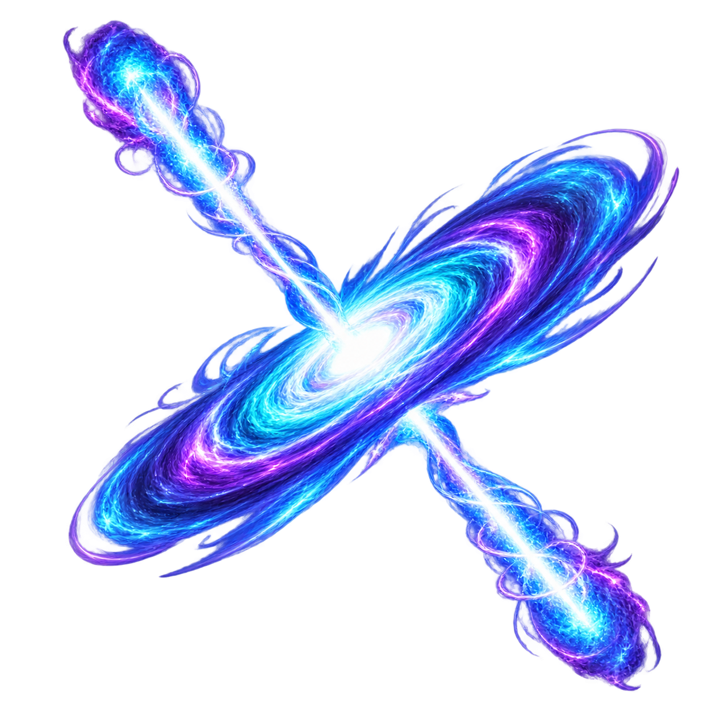
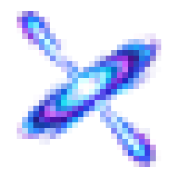

A · POLAR BEACON
recommended · fastest quasar read

palette
platinum / cyan / violet

형태: 기울어진 타원 원반과 곧은 양극 제트가 선명한 X 실루엣을 만든다.
평가: 세 cue의 분리가 가장 빠르다. 중앙 겹침은 조밀하지만 설명 없이 Quasar로 읽힌다.
32px PASS · bbox 3,2–28,29 · margin 3/2/3/2 · edge α0